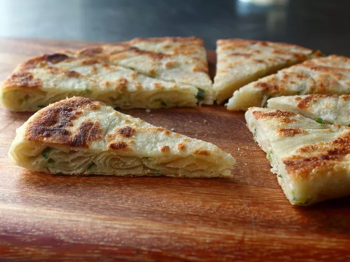

Scallion Pancake

Description
Scallion pancakes are a beloved staple in Asian cuisine, particularly in
Chinese and Taiwanese culinary traditions. These savory delights are made
from a simple dough of flour, water, and salt, infused with generous
amounts of chopped scallions (green onions). The dough is rolled out
thinly, brushed with oil, and then folded and rolled again to create
layers. Finally, it's pan-fried until crispy and golden brown on the
outside, while remaining soft and chewy on the inside. The result is a
deliciously aromatic pancake with a perfect balance of flavors—slightly
salty from the dough, fragrant from the scallions, and irresistibly crispy
from the frying process. Scallion pancakes are often served as appetizers,
snacks, or as accompaniments to main dishes, and they're enjoyed by people
of all ages for their satisfying crunch and comforting taste.
Ingredients
- 2 cups bread flour
- 1 ½ teaspoons kosher salt
- ¾ cup very hot water
- 3 tablespoons vegetable oil
- 2 teaspoons sesame oil
- 1 tablespoon all-purpose flour
- 1 teaspoon all-purpose flour
- 1 bunch green onions, mostly green parts, thinly sliced
- 1 ½ tablespoons vegetable oil, or as needed
Steps
-
Combine bread flour and salt in a large bowl. Make a well in the middle
and pour in hot water. Mix together with a wooden spoon to form a shaggy
dough.
-
Transfer dough onto a lightly floured work surface. Knead dough until
sticky but relatively smooth and elastic, dusting with a minimal amount
of flour if needed. Wrap in plastic wrap and let dough rest for 2 hours.
-
Mix vegetable oil, sesame oil, and flour together in a skillet over
medium heat until starting to bubble, about 3 minutes. Cook for 1 minute
more. Remove from heat and cool to room temperature.
-
Unwrap dough and cut in half. Roll out into a tube and press down with
your fingers. Use a rolling pin to flatten dough into a rectangular
shape about 1/8-inch thick, flipping over and dusting lightly with flour
halfway through.
-
Paint surface of the dough with the oil mixture until just covered,
leaving 1 inch of space on the edges. Sprinkle scallions on top. Roll
dough up tightly to seal in the scallions, starting with the long side.
Pull the opposite edge over the top once you have reached it.
-
Coil 1 end of the dough inward toward the middle; wrap the opposite end
around the coil to finish, tucking the tip under the bottom. Dust the
coil with flour and roll dough out into a pancake about 1/4-inch thick.
Repeat with remaining dough, oil, and green onions to make the second
pancake.
-
Heat vegetable oil in a cast iron skillet over high heat. Add 1 pancake;
lower heat to medium. Cook until crispy and browned, about 4 minutes per
side. Repeat with the other pancake. Cut into wedges.